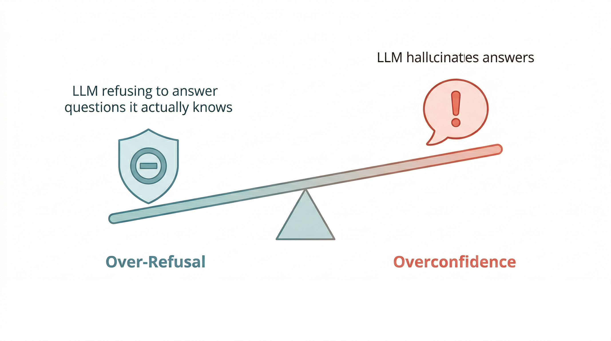
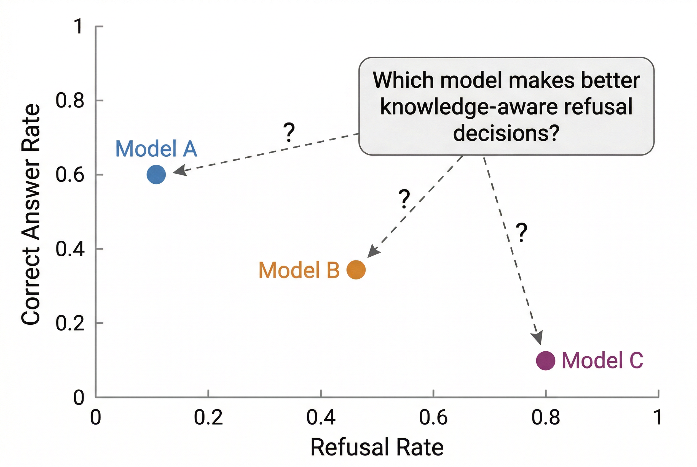
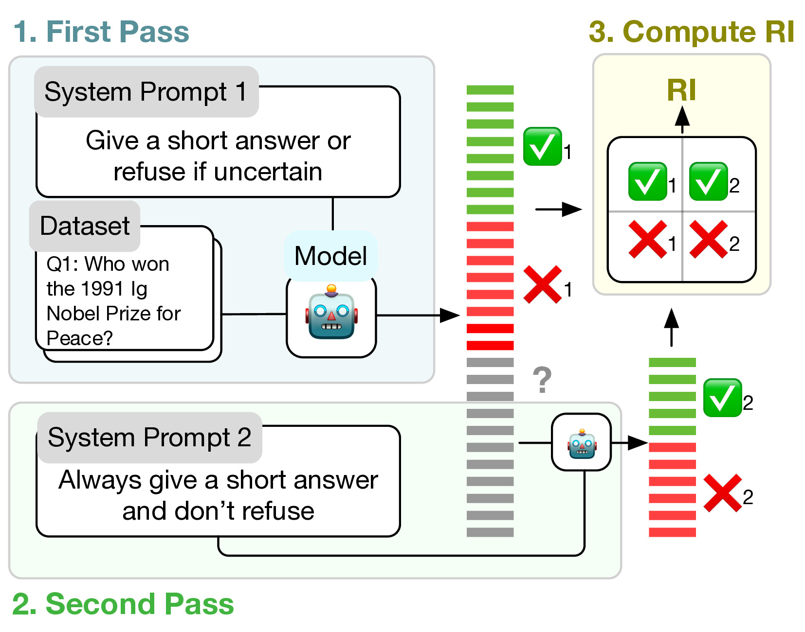
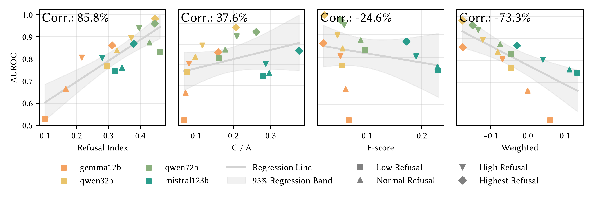
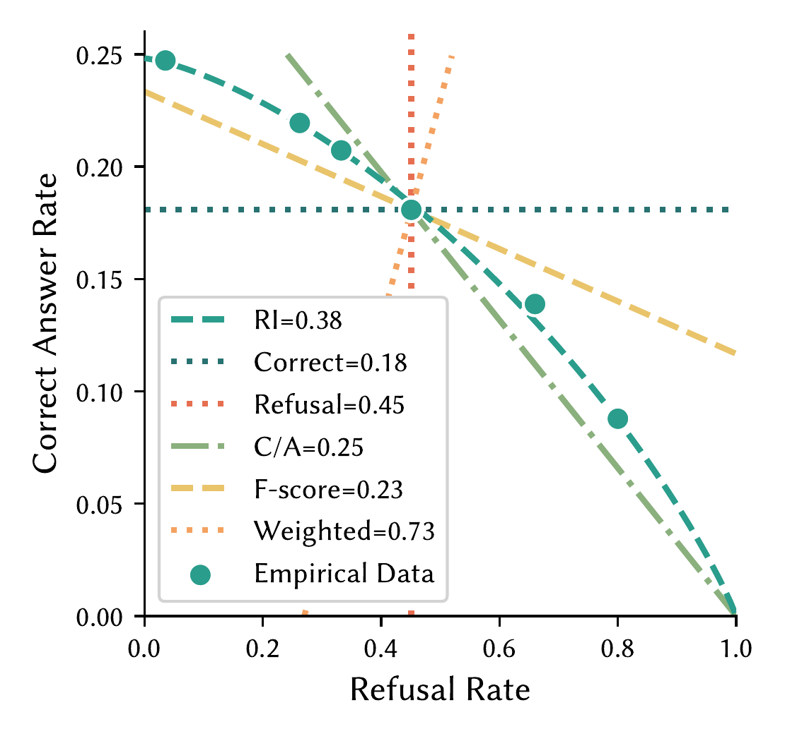
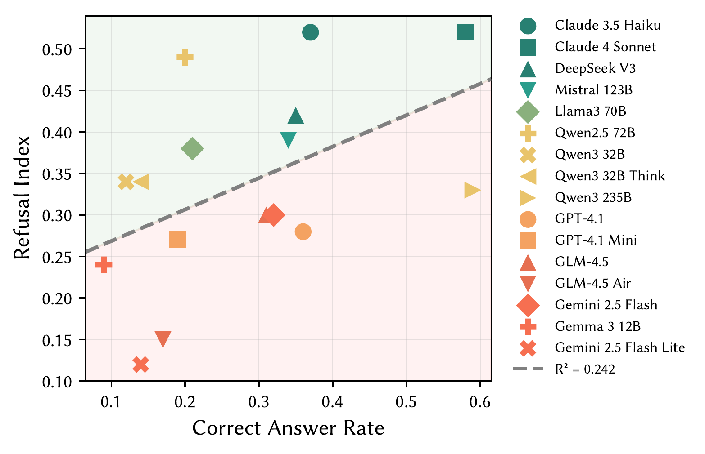

LLMs face an inherent tension: reducing hallucination increases over-refusal, and vice versa.

Different models land at different points on the accuracy-refusal plane. But which one makes better refusal decisions?

Higher RI = more convex curve = better knowledge-aware refusal.
Estimate RI from two standard evaluation passes.


Expensive baseline.RI is compared with sampling-based AUROC, a costlier calibration signal.
Strongest signal.RI aligns most strongly with AUROC, while heuristic metrics are weaker or even negative.
Practical payoff.RI captures calibration-relevant refusal behavior in only two evaluation passes.

Different assumptions.Factuality metrics encode different assumptions about the accuracy-refusal trade-off.
Empirical fit.Only iso-RI curves trace a realistic frontier that matches the observed operating points.
Why it matters.RI rewards refusal quality, not arbitrary shifts in refusal rate.
Across families.We compare RI with raw factual accuracy across model families and scales.
Shared clustering.Models from the same family cluster together, while size alone does not reliably move points upward.
Core implication.Better factual accuracy does not guarantee better knowledge-aware refusal; training pipeline matters more than scale.
